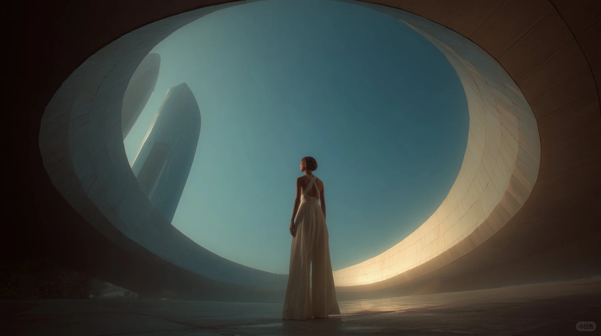

PRIMARY CONCLUSION
清晰的结论，先于华丽的玻璃。
用一个主判断、一个证据摘要和一个下一步动作建立开场。
结论优先87% 证据完整度
COMPOSED STARTER
一个应用壳与一个页面主角，共享同一套 Gary tokens 和组件契约。
PRIMARY CONCLUSION
用一个主判断、一个证据摘要和一个下一步动作建立开场。

推荐方案
8.4
| 方案 | 判断 | 评分 |
|---|---|---|
| A | 推荐 | 8.4 |
| B | 保守 | 7.2 |
暂无可比较数据。
CHAPTER 01
长正文与证据密集区使用 SolidPlate，目录导航保持独立玻璃表面。